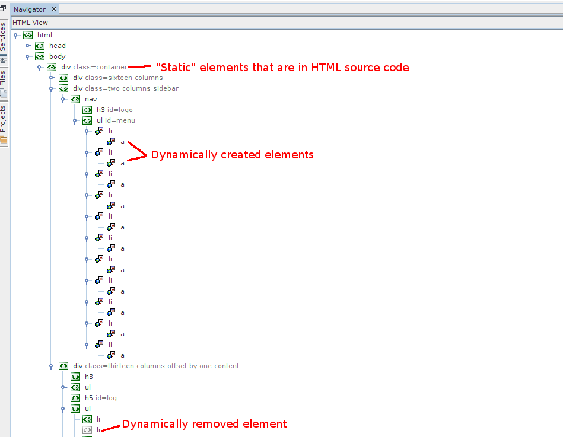

NetBeans Testing App
NetBeans 7.3
Navigator and DOM interaction
General
- Task: Hover over some item in Navigator
- Result: Element is highlighted in browser
- Task: Turn Select Mode on and click on some item in Navigator
- Result: Element stays highlighted after you hover over another element. The second element is also highlighted but with lighter color
- Task: Click on some item in Navigator
- Result: Properties window shows properties for given element. CSS Styles window is populated
- Task: Check Navigator window with some elements that have class and id attribute

- Result: Values of class & id attribute are appended to the node name. Dynamically added and removed elements are marked differently (use sample/debugger.html to try it - menu is loaded dynamically and you can try to remove some list item onclick) than static elements
Context menu
- Task: Run file and right click on some DOM element in Navigator
- Result: Following actions are available: Go To Source, Modify rules, Delete, Select in Browser and 3 checkboxes for breakpoints: On Subtree modifications, On Attribute Modifications and On Node removal.
- Task: Select element in Navigator and choose Go To Source action
- Result: Editor is opened with given file and cursor is at the selected element
- Task: Select element in Navigator and choose Modify Rules action
- Result: Dialog similar to the one below is opened. You can modify ID and class attribute, change is in green if the identifier will be created or in bold black if it exists in given css file. If you're removing rule, the change is crossed. If you select some style sheet using the combo box then list of identifiers offers only identifiers from the selected css file and At Rule shows media queries from the css file (TODO). Try to create a new rule in css file
- Task: Select element in Navigator and choose Modify Rules action II - new rule inside media query
- Result: Invoke Modify Rules again and as a css file choose skeleton.css. List of media queries is offered, select some and create a new rule. Make sure that the rule is inserted at the correct position
- Task: Select element in Navigator and choose Modify Rules action III - remove rule
- Result: Invoke Modify Rules again and remove all rules. The selected element does not have any rules attached. Check this in editor
- Task: Select element in Navigator and choose Delete
- Result: Selected element is removed from html source
- Task: Start Select Mode, select element in Navigator and choose Select in Browser
- Result: Selected element is highlighted in browser
Load page to iframe
- After loading some (external) URL, Navigator should reflect these new elements and display them in proper position
- Check that you can select elements inside the iframe document in Navigator Window and that after this selection the element is highlighted in browser (so far it doesn't work in opposite direction - you cannot select particular elements inside iframe in Selection Mode in browser)
Dynamically create external JS script
- This button adds <script> tag with external script (http://netbeans.org/images_www/js/switcher.js). Should it be loaded in Remote Files?
- After clicking the button, confirmation dialog is opened
- Check issue #216421 to see if it should even work :)